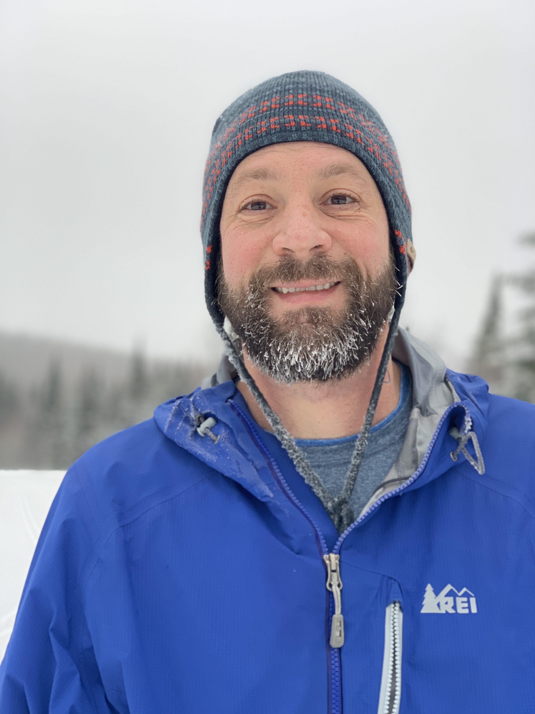
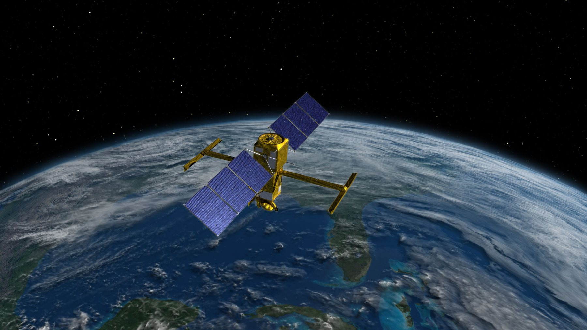

Concept 1
Treats the homepage as a concise academic profile. It prioritizes identity, leadership, selected work, and a more deliberate visual rhythm.
Open Concept 1These concepts focus on different priorities: personal authority, program leadership, and fieldwork atmosphere. Each page is standalone so you can open it directly and compare how the same material feels under different structures.

Treats the homepage as a concise academic profile. It prioritizes identity, leadership, selected work, and a more deliberate visual rhythm.
Open Concept 1
Reframes the site around major programs and campaign leadership, making the site feel like the front door to an active research portfolio rather than a static biography.
Open Concept 2
Uses photography as the narrative anchor. This direction best showcases cruises, operations, and the human side of the research while still surfacing science and leadership.
Open Concept 3